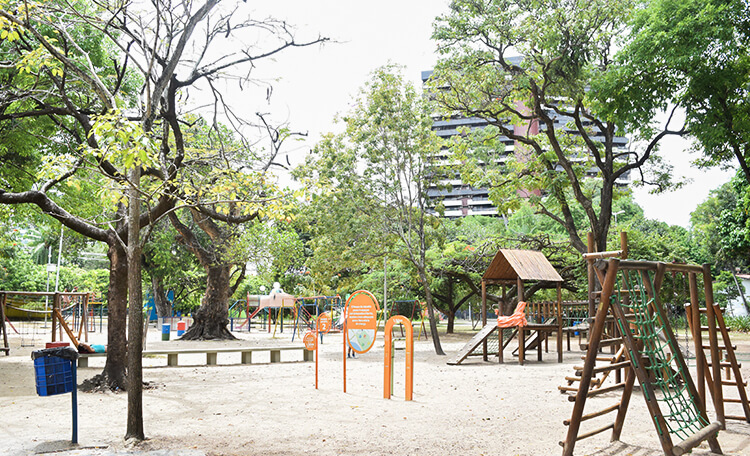

Para um momento de tranquilidade em meio à cidade, o Parque da Jaqueira é o lugar ideal. Com amplas áreas verdes,
trilhas para caminhada e espaços para piquenique, é um refúgio onde é possível se desconectar do agito urbano e
desfrutar de um ambiente sereno.